Serviços
Metrologia das radiações ionizantes. Calibração de monitores de radiação e avaliação de equipamentos de radiodiagnóstico.
Conhecer os serviços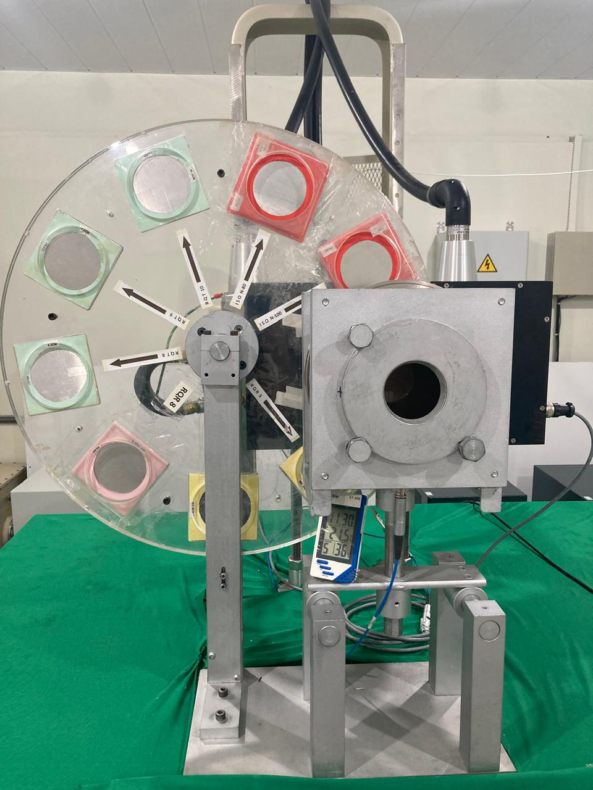
O GDOIN é um dos grupos de pesquisa do Departamento de Energia Nuclear (DEN) da UFPE. Forma recursos humanos na graduação e na pós-graduação e pesquisa controle de qualidade em radiodiagnóstico e medicina nuclear, ensaios não destrutivos e dosímetros semicondutores e luminescentes.
O grupo presta serviços de metrologia das radiações ionizantes e de consultoria em proteção radiológica, atua em arqueometria com fluorescência de raios X e realiza datações pelas técnicas OSL, TL e EPR.

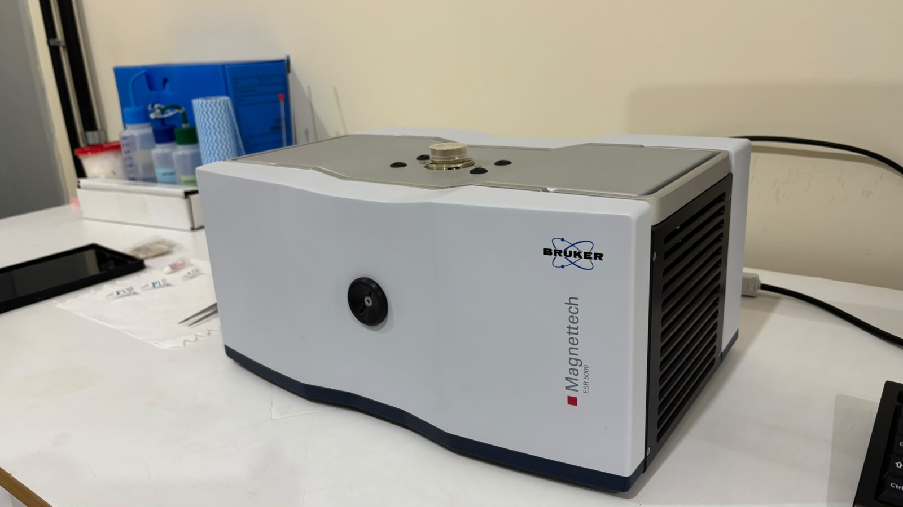

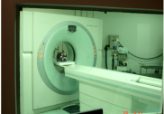
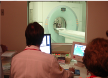
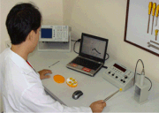


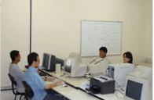
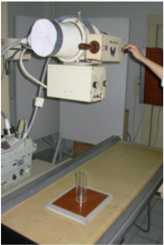
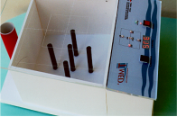
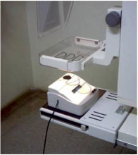
Passe o mouse para ampliar; clique para abrir a foto.Toque para abrir a foto.
Centro Integrado de Dosimetria e Instrumentação Nuclear
Atendimento a hospitais, clínicas, indústrias e universidades.
Integram o CIDIN. Acesso para pesquisadores da UFPE e de outras instituições.
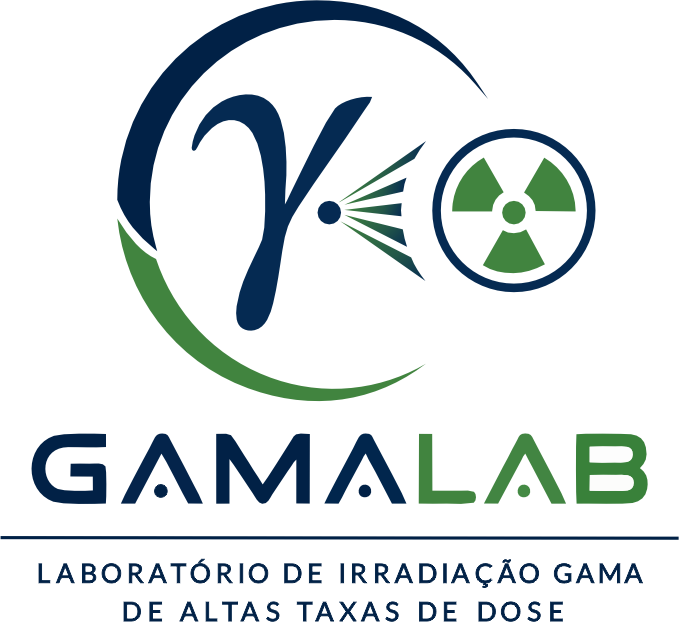
Irradiação gama para pesquisas em materiais, nanotecnologia e ciências biológicas e da saúde.
Conhecer o laboratório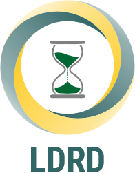
Dosimetria retrospectiva, datação por TL, OSL e EPR e caracterização de materiais.
Explorar as instalações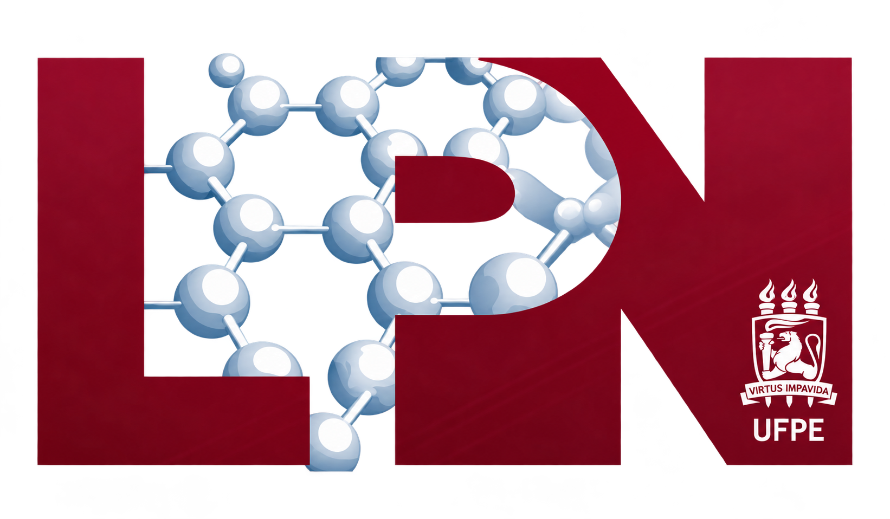
Infraestrutura de pesquisa compartilhada do CIDIN.
Conhecer o laboratórioOutras frentes de atuação do GDOIN.
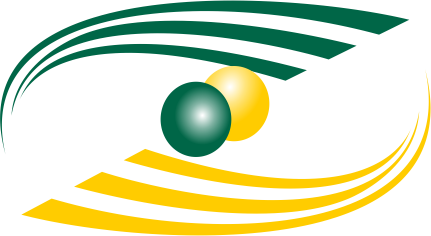
Museu de Ciências Nucleares
Divulgação científica sobre as aplicações da energia nuclear.
Visitar o site do museu
Startup de instrumentação nascida das competências do grupo.
Conhecer a RAD